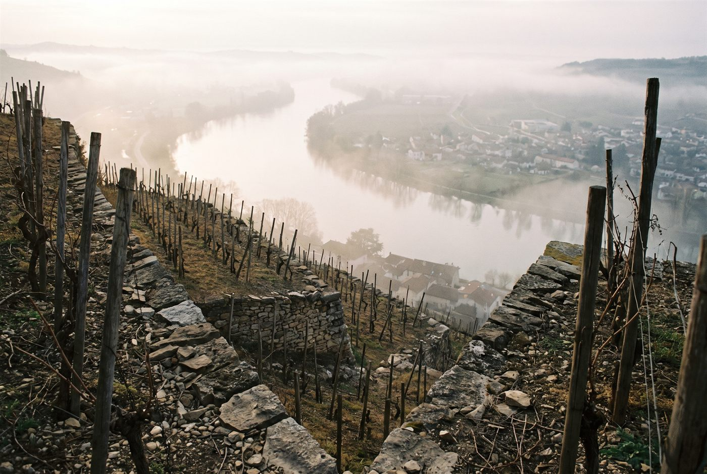

Les domaines · Rhône Nord · Ampuis
23
Ampuis, Côte-Rôtie · Rhône Nord
Domaine Chambeyron-Manin
Une seule cuvée, un seul coteau : la Côte Brune en vendange entière, tannique et profonde.

Ambiance de Ampuis
Micro-domaine familial d'Ampuis fondé par Marius Chambeyron, aujourd'hui conduit par Véronique Manin, troisième génération. Une seule parcelle d'un demi-hectare sur la Côte Brune, plantée de syrah de type sérine dans les années 1930 et 1960, travaillée entièrement à la main sans intrant de synthèse. La production dépasse rarement 200 caisses par an.
Rouges
Syrah (sérine)Schistes abrupts de la Côte Brune, vinification en grappes entières avec levures indigènes et élevage de 18 mois.
Ces cuvées vous parlent ?
Demander les disponibilités